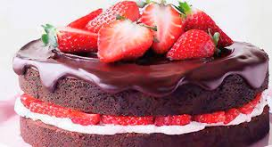

Pastel de chocolate con fresa

ingredintes Para dos moldes redondos de 18x6 cm.
4 tazas de harina.
1/2 taza de cocoa en polvo sin azúcar.
3 cdas. de levadura química(royal).
1 cdita. de sal.
460 grs. de mantequilla.
200 grs. de azúcar normal (la receta de casa lleva 800 grs. demasiados para mi, pero si son dulzones....)
100 grs. de azúcar morena-mascabado.
8 huevos separados (claras y yemas).
2 vainas de vainilla o 4 cdas. de un buen extracto de vainilla.
2 cdas. de ralladura de limón.
2 tazas de leche.
Varios: 1 kilo de fresas frescas, 1 metro de listón café oscuro y 1 metro de listón café claro.
50 grs. de chocolate oscuro fundido, una duya de pico pequeño.
Preparación:
Cernir los ingredientes secos.
Acremar mantequilla a temperatura ambiente con azúcar clara y morena.
Agregar una a una las yemas, enseguida la vainilla.
Incorporamos los ingredientes secos (harina, cocoa, royal y sal) y leche alternadamente hasta tener una mezcla consistente.
Levantamos las claras hasta que formen picos e integramos envolvementemente en la mezcla anterior.
Dividimos la mezcla en dos y vaciamos en los dos moldes que hemos engrasado y enharinado previamente.
Horneamos a 180 por una hora aproximadamente, hasta que al introducir un palillo salga limpio.
Dejar enfriar, desmoldar y reservar.
Turroncitos de chocolate: Con el chocolate fundido y vaciado en una manga pastelera, con una duya de pico liso y pequeño, vamos a ir formando turroncitos sobre papel mantequilla, que vamos a refrigerar hasta la hora de usar. Salen aproximadamente 16-18 turroncillos.